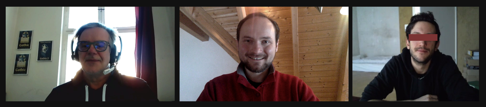
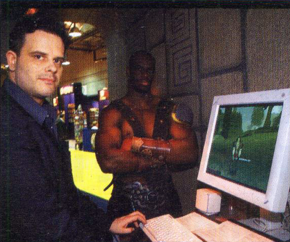

../ Ein Interview mit Tom Putzki
zum 20. Jubiläum von GOTHIC - Part 4
von Phoenix Tales
Audio: TomPutzki_PhoenixTales_20thAnniversary_Part4.ogg
Interview Transkript
Tom: Ich hab da vielleicht noch was für euch, wartet mal... Mir ist grade was aufgefallen und eingefallen - da wir jetzt die ganze Zeit bei Marketing, Messen usw. waren -, so'n kleinen fun fact, der auch denke ich etwas unbekannter ist. Wir haben für unseren ersten Messeauftritt auf der E3 ein männliches Model gecastet. Gorn. So.
Ich glaube das war im Jahr 2000, wenn mich nicht alles täuscht, also noch vor Release... Lange Rede, kurzer Sinn: Ich hab den Kollegen dann 13 Jahre später wieder auf der E3 getroffen. Das ist er:
Damals [2000] war er Model und angehender Schauspieler. Und als ich ihn wieder traf, wie gesagt nach 13 Jahren - wir haben uns erkannt und hatten einfach Spaß. Und seitdem haben wir auch Kontakt gehalten. Und dann hat man sich auch mal ausgetauscht, was der denn alles so gemacht hat. Und das Bild schick ich euch jetzt mal rüber, weil der war nämlich dann als Schauspieler auf einmal in einer Produktion, die war schon aller Ehren wert.
Oliver: Jetzt bin ich gespannt.
Tom: So, das Bild kommt jetzt:
Oliver: Nicht ernsthaft, hahaha.
Florian: [lacht] Nice.
Oliver: Pirates 3 ne?
Tom: Ne 1. Das ist noch 1.
Oliver: Ist noch 1? Okay. Cool. DAS ist Gorn [lach]
Tom: Das ist Gorn, ganz genau.
Der Kollege, nur für die Records, ich schreib seinen Namen mal [in den Chat]:
"Isaac Singleton jr."
[Er hat auch 2001 in Planet of the Apes gespielt oder auch 2020 in "Chapter 9: The Marshal" of The Mandalorian. Außerdem scheint er auch als Voice Actor tätig zu sein. In Schlacht um Mittelerde I und II verlieh er zum Beispiel Lurtz seine Stimme. - Flosha]
Oliver: Sehr cool. Tja... von der Strafkolonie aufs Piratenschiff.
Tom: [lacht] Kommt irgendwie bekannt vor, hm?
Oliver: Ja genau [lacht].
Florian: Dann ähm.. du hattest eben erwähnt, wie du die Freundschaft mit In Extremo entwickelt hast und dann die Sache mit diesem Schauspieler hier [und der Weg ins Marketing usw.], das heißt: Gothic hat im Grunde ja schon ziemlich stark so dein Leben beeinflusst oder auch verändert und dir auch ziemlich viele Türen geöffnet, oder?
Tom: Hm, ja wahrscheinlich ist das so. Aber ich hab das gleiche ja auch für Gothic und die Piranha Bytes getan.
Florian: [lacht] Das stimmt. Aber hat es... überhaupt deine Karriere so in Gang gebracht?
Tom: Es hat sie auf jedenfall verändert. Aber dieser Schritt Piranha Bytes zu gründen und das Studio aufzubauen und einen Publisher Deal zu finden und sowas, das war ja auch größtenteils meine Aufgabe, den Publisher zu suchen. Ich hab mit Gothic ja bei vielen Publishern auf dem Schoß gesessen. Vielen Namhaften, die hinterher auch durch die Bank gesagt haben: "Scheiße, hätten wirs mal genommen."
Oliver: Bist du der Marke, weil du damals ja mit soviel Herzblut das auch promotet hast, fühlst du dich der Marke noch sehr verbunden oder ist das mehr nur so das Erstlingswerk Gothic 1, das dir nah am Herzen liegt?
Tom: Ne ich fühl mich der Marke schon immer verbunden. Also ich kanns nicht anders sagen. Was dem ganzen jetzt nochmal in den letzten Jahren 'n Boost gegeben hat, ist dass ich durch meine aktuelle Tätigkeit für Wargaming sehr viel in Europa rumgereist bin und auf Konferenzen, Veranstaltungen, Messen, Computergame-Events aller Art, viel aktiv und unterwegs war, oftmals als Sprecher auf der Bühne oder für Presse-Interviews oder oder oder... Und ich dort, vorallem in Osteuropa, wie ich vorhin schon erzählt habe - sei es Polen, sei es Tschechien, sei es Ukraine, Belarus, Russland selber, aber auch so Länder wie Estland, Lettland, Litauen -, dass man da auf eine ungeheure Anzahl an Gothic Fans trifft und ja, das ist einfach wirklich krass. Und das hat in den letzten Jahren nochmal meine Verbindung zu der Marke, oder zu Gothic, wirklich deutlich nochmal aus der Ecke der Geschichte hervorgeholt. Weil das hab ich einfach erlebt: Ich war für Wargaming da und habe über Panzer erzählt und dann kamen immer noch Fragen zu Gothic. Dann kamen Interview Anfragen von polnischen Journalisten, die nur über Gothic sprechen wollten oder solche Geschichten.
Ich erinnere mich an einen wunderbaren Abend vor ein paar Jahren, den ich mit einem Freund in Warschau verbracht habe. Und dann sind wir auch gemeinsam auf eine Spieleentwickler-Veranstaltung in Warschau gegangen und dort habe ich dann den ganzen Abend mit dem Chefdesigner von Witcher 1 zusammen gesessen und wir haben uns über Gott und die Welt unterhalten und natürlich über Gothic und Witcher.
Und er hat ganz klar gesagt: Natürlich haben wir Gothic als Vorbild genommen, überhaupt keine Frage. Wir wollten unseren eigenen Stil und was eigenes, aber sehr viel Anregung haben wir uns von Gothic geholt. Ja, das freut einen natürlich.
Oliver: Das ist natürlich cool. Das ist auch in unserem eigenen Team zum Teil. Also diese Begeisterung für Gothic in Osteuropa und Russland. Wir haben jetzt, ähm... Einer kommt aus Polen, einer aus Rumänien und weitere Interessenten und Supporter sind aus Tschechien [und Russland], also man sieht das extrem deutlich, auch wenn man sich anschaut: Die großen Projekte, die jetzt in Osteuropa teilweise gelauncht werden, diese Mod-Projekte, die ja eigentlich von der Größenordnung eigene Spiele sind.. [siehe History of Khorinis], also da habt ihr irgendwie total nen Nerv getroffen, in der Gegend.
Tom: Ja, das scheint offensichtlich so. Aber ich merk das auch, wie gesagt, ich arbeite jetzt seit zehn Jahren für Wargaming. Wargaming kommt ja ursprünglich auch aus Weißrussland, aus Minsk. Und deswegen, seit zehn Jahren bin ich also nahezu täglich in Kontakt mit Leuten, die aus dem Territorium der ehemaligen Sowjetunion und/oder Osteuropa kommen. Und ich merke einfach, dass mir als Ruhrpottler - und heutiger Wahlberliner -, dass mir dieser Menschenschlag dort drüben einfach total liegt. Ja? Das ist ähnlich wie zu Hause im Pott oder wie hier in Berlin, das ist nix Überkandideltes, sondern down to earth und man kann richtig gut mit diesen Leuten zusammenarbeiten, feiern, Spaß haben und das alles.. Ich finds großartig. Deswegen fühl ich mich da, in diesem osteuropäischen Raum, auch super wohl. Kann ich nicht anders sagen.
Oliver: Also da hat auch vielleicht die... ihr habt ja viel von eurer eigenen Ruhrpott-Mentalität - und von dem, man nennts ja immer den "Ruhrpott-Charme", glaub ich, von Gothic -, habt ihr ja ins Spiel gepackt und wahrscheinlich weil die Kulturen so gut zusammenpassen, hat das dann auch so nen Nerv getroffen.
Tom: Ja das könnte gut sein, ja. Und der Ruhrpott* hat nunmal nen ganz eigenen Charme, das ist überhaupt keine Frage. Und ne Menge von Gothic Designs sind auch so mitten im prallen Leben, gerade so in Sommertagen in Bochum City im Bermuda Dreieck entstanden. Wir saßen im Biergarten des Mandragora - gerne mal nachmittags um 3 oder 4 - zusammen und haben mal'n Bier getrunken oder zwei und haben über bestimmte Designaspekte diskutiert, noch und nöcher. Mitten im Ruhrpott, mitten im prallen Leben.
[* Man beachte auch, dass diese Bezeichnung 'Pott' einen Topf bezeichnet und im übertragenen Sinne nichts anderes als ein Tal meint; im englischen spricht man entsprechend von 'Ruhr Valley'. Und es ist auch ein 'Minental' - in diesem Gebiet wurde besonders viel Steinkohle abgebaut. Ich denke, das dürfte für die Leser aus anderen Ländern vielleicht ganz interessant sein. - flosha]
Oliver: Okay.. weil du grade den Biergartennamen 'Mandragora' sagst, in Witcher 3 Soundtrack gibts einen Track, der heißt Mandragora. Das ist aber nicht zufällig noch ne Verbindung? :P
Tom: Äh, also die ist mir jedenfalls nicht bekannt.. Aber ich hab das Mandragora immer wieder mal in Interviews erwähnt, also weiß der [???].
Florian:[lacht] Weil du jetzt von Wargaming sprichst, das wäre auch unsere nächste Frage gewesen, was jetzt so das aktuelle Projekt ist, an dem ihr arbeitet, falls du darüber was sagen kannst.
Tom: Naja, wir haben natürlich World of Tanks, auf allen Plattformen, wir haben World of Warships, wir haben World of Warplanes, wir haben Master of Orion und wir haben, vorsichtig formuliert, da wir einige hauseigene Entwicklerstudios an das Unternehmen angeschlossen haben, einige Titel, die noch nicht angekündigt sind, in der Pipeline.
Oliver: Das heißt deine Aufgabe jetzt [...] ist ähnlich dem, was du früher dann schon gemacht hast, also du bist nach wie vor im PR Bereich tätig oder hat sich das..
Tom: Ja PR, dann kommt auf jedenfall immer ein bisschen Networking, Business Development und sowas [dazu], aber das sind die Sachen, die ich schlicht und ergreifend einfach gut kann. Punkt.
Florian: Hat man bei Gothic auf jedenfall gesehen. :)
Ich denke du hast da mega viel dazu beigetragen auch, nicht nur das in der Presse so bekannt zu machen, sondern auch die Begeisterung und so bei den Fans zu schüren, schon vor Release, und dadurch natürlich auch so'n bisschen die Begeisterung, die wir jetzt heute noch dafür haben, weil wir ganz oft von den Sachen halt inspiriert sind, die du damals angekündigt hast, auch wenn sie dann vielleicht nicht ganz so im fertigen Spiel noch drin waren.
Tom: Hm. Ich hab euch einen Link zu einem Bild rübergeschickt. In diesem Gebäude, was ihr da seht, Bochum, Bermuda Dreieck, ist unten im Erdgeschoss das Mandragora. Und hier diese roten Schirme und sowas, das ist sozusagen der Biergarten des Mandragora.
Oliver: Da wurde über Gothic gebrütet..
Tom: Ja, da wurde über Gothic gebrütet. Und die Straße, die rechts am Gebäude vorbei führt, also am rechten Bildrand entlang, das ist so der Anfang der Fußgängerzone der Stadt Bochum. Also das liegt wirklich genau so auf der Spitze des sogenannten Bermuda Dreiecks. Das heißt so weil man da gerne mal versackt.
Oliver: Ja, ist klar [lacht]. Also wenn ich mal durch Bochum wieder komme und irgendwie Biergärten wieder offen haben, dann werd ich da mal'n Bierchen trinken auf jedenfall. Oder auch zwei.
Florian: Du hast am Anfang ja direkt erwähnt, du hättest dir unsere Website ja schon angeguckt und sogar das Interview gelesen. Und da wollten wir einfach mal fragen, was du so von unserem Projekt hältst?
Tom: Ihr seid wahnsinnig. Aber im positivsten Sinne [lacht]. Aber das als Hobbyprojekt, das.. meine Güte, das ist schon amtlich. Also ja. Ich bin nicht.. nicht wenig beeindruckt, sagen wirs mal so.
Oliver: Danke.
Florian: Das freut mich wirklich.
Oliver: Ja, mich auch.
Florian: Und wir wären dir wirklich unendlich dankbar, wenn du vielleicht - du hast ja erwähnt, dass irgendwo eventuell doch noch so ne Presse-Demo irgendwo rumfliegen könnte, wenn du da mal ein bisschen suchen könntest, ob da noch was zu finden ist. ;)
Tom: Ja, ich hab sowieso aus bestimmten Gründen von meiner Frau die Aufgabe gekriegt, mich mal gefälligst auf den Dachboden zu begeben und da mal einige Dinge rauszusuchen und das wird innerhalb der nächsten Wochen passieren. Und ja, ich hab, jetzt gerade, wo wir darüber sprechen, ich hab auch schon'n anderes Interview mit Leuten hier aus dem Umkreis geführt und jetzt ist mir noch gerade 'n schriftliches Gothic Interview zum zwanzigjährigen Jubiläum reingefallen und sowas.. und ich hab einfach viel drüber nachgedacht, was ich alles hatte und was ich höchstwahrscheinlich eben irgendwann mal im Laufe der letzten zwanzig Jahre "entsorgt" habe. Und glaubt mal, das hatt' bei mir jetzt mehr als'n weinendes Auge... das hatte mehr als'n weinendes Auge. Naja, über ein paar Sachen freu ich mich halt noch, dass ich die habe, aber naja, ein paar Sachen sind einfach weg.
Florian: Ja, ich hatte deswegen auch diesen Gameplay-Trailer noch in Discord geschickt. Das wär' so eine der Versionen, die irgendwie verloren sind. Und das könnte eine der Versionen sein, wo noch viel von der alten Story auch vielleicht enthalten ist, was dann alles raus gecuttet wurde [etwa viele Dialoge, die später von Stefan Nyul und Mike Hoge rausgeworfen wurden.] Und da muss es ja auch irgendwie mal ne Demo dazu gegeben haben.
Tom: Ja, sicher.
Florian: Vielleicht existiert da noch was.
Tom: Also wenn ich was finde, dann wirst dus erfahren. :)
Oliver: Nur kurz hätte ich jetzt noch vielleicht eine ganz kurze, improvisierte Frage, weil du jetzt gerade so'n bisschen auf die 'sentimentale' Komponente schon gekommen bist. Und jetzt auch seid wahrscheinlich zwanzig Jahren in der Spielebranche bist..
Tom: [lacht] Ne, über 25 Jahre jetzt.
Oliver: Über 25, sorry..
Tom: Ich schick eben noch zwei Bilder rüber ja? Nur damit man wenigstens sieht, dass ich doch noch ein, zwei schöne Dinge hier bei mir habe.
Oliver: Okay. Haha, Mike Hoge hat mit nem Gobbo unterschrieben.
Tom: Ja, ganz genau, er hat den Gobbo gemalt.
Oliver:[lacht] Klasse! Ähm, ich wollt mal fragen, also Gothic, man merkts dem Spiel ja einfach an jeder Ecke an, das war halt so, wie du's auch gerade beschrieben hast, ihr saßt im Mandragora und habt gebrütet und das war so ne Herzensangelegenheit. Und klar, am Ende konnte nicht alles umgesetzt werden, aber man merkt diesem Spiel einfach noch an, das war noch so richtig Herzblut und Kunst und weniger ein Produkt, mehr ein Kunstwerk, möcht ich's fast nennen.
Tom: Dankeschön..
Oliver: Bitte, also das ist meine ganz persönliche Meinung, so kommts für mich rüber.Und in der Spielebranche, in der du jetzt.. Es ist zunehmend ne Industrie, es ist ne Mega Industrie.
Tom: Es ist ne Mega Industrie.
Oliver: Werden solche "Herzblutprodukte" eigentlich noch gemacht oder ist das wirklich so die Indies, die sich an sowas noch rantrauen und im Mainstream setzt man auf Dinge, wo man weiß: Okay, da stimmt dann am Ende die Marge und das Business Model stimmt.
Tom: Ja, im Großen und Ganzen muss ich dir da natürlich Recht geben. Ich meine, es kommen immernoch fantastische Spiele raus, die einfach großartig sind. Aktuell ist mein Herz hin und her gerissen was Cyberpunk betrifft. Was ja auf'm PC ein großartiges Spiel ist, nach meinem Dafürhalten, auf Konsolen wissen wir, dass es da nicht ganz so performed und dass sich CD Projekt Red auch ganz schön, gerade als Börsennotiertes Unternehmen, in die Nesseln gesetzt hat und ja.. Je größer die Firma wird, je größer das Unternehmen wird, und wenn da noch externe Geldgeber, Kapitalgeber beispielsweise drin sind, oder man börsennotiert ist, wie ich's mit der Phenomedia halt erlebt habe, dann fängt die ganze Sache an mir persönlich beispielsweise keinen großen Spaß mehr zu machen.
Oliver: Okay, ist mehr der Treiber.. oder ist der Taktgeber für die Entwicklung ist mehr dann der Business Plan als das Gamedesign oder?
Tom: Ja. Absolut, absolut. Und deswegen kommen so viele Spiele von großen Publishern leider sehr unfertig raus. Und ihr müsst da einfach mal drauf achten: Bevorzugtes Rauskommdatum für nicht wirklich fertige Spiele ist immer der März. Warum? Weil mit dem März das Fiskaljahr für die meisten großen Unternehmen endet und das neue Fiskaljahr, das neue Finanzjahr startet dann im April. So. Und deswegen muss das dann noch im März raus.
Oliver: Ahh.. ist klar. Das ist interessant, okay.
Tom: Ja und wie gesagt, sobald du mehr für deine Quartalberichte arbeitest, die dann deine Börsen, Banken und Analysten und Shareholder usw. sehen wollen, statt an den eigentlichen Produkten, ja.. dann ist es irgendwie vorbei. Also macht keinen großen Spaß.
Und was ich jetzt bei Wargaming erlebt habe ist auch'n kleiner Ritt. Ich bin wie gesagt zehn Jahre dabei. Ich war einer der ersten, die in Europa überhaupt geholt wurden. Europa jetzt ohne das Territorium der ehemaligen Sowjetunion, das ist jetzt mal ausgeklammert - nicht weil es nicht innerhalb von Europa liegt, aber jetzt mal aus Wargaming-Sicht. Und als ich dazu gekommen bin, bestand Wargaming aus 200 Leuten. Davon knapp 180 in Minsk. Und die ersten 20 in San Francisco, USA. Und dann kam ich dazu. Ja. Und heute hat Wargaming über 5500 Mitarbeiter, über 20 Niederlassungen weltweit, darunter Singapur, Tokyo, Sydney Australien, Seattle, Chicago, Houston Texas, Zypern, Moskau, St. Petersburg, Minsk, Kiev, Berlin usw. usw. Also ist schon'n bisschen gewachsen.
Oliver: Und das war also dein.. ich weiß nicht wie groß die Phenomedia damals war? Aber das klingt ja schon, als hättest du da nochmal die zweite fast Konzernkarriere nochmal gemacht oder den zweiten Konzern entwickelt oder.. bei 5000.. ne, Konzern sollte mans noch nicht nennen, aber ist schon ne stattliche Nummer.
Tom: Ne ist schon ne amtliche Hausnummer. Also auch für die Spielebranche. Natürlich sowas wie EA oder Ubisoft oder so sind natürlich größer, aber n' Kleiner sind wir mit Wargaming auch nicht mehr.
Oliver: Ja.. dann, ich weiß nicht, Florian, hast du noch eine Frage? Weil ich glaub im Doc seh ich jetzt nichts mehr oder?
Florian: Ne, wir konnten eigentlich alles soweit beantworten. [...] Wir sind auf jedenfall mega dankbar für das Interview und konnten einige Fragen klären.
Tom: Sehr sehr gerne. Ich hoffe es hat 'n bisschen was gebracht.
Florian: Auf jedenfall. War mega interessant.
Tom: Auch wenn Stimmen in der Community da waren: "Der hat ja nur PR gemacht, wat soll ich den denn fragen?"
Florian: [lacht] Das, das stimmt... Das hat mich auch ein bisschen äh... 'traurig' [eher wütend ;)] gemacht.
Tom: Ja, ich habs schon gelesen [lacht].
Oliver: Ja wir danken dir auf jedenfall ganz herzlich und wenn ihr noch alle Lust habt, ich würde noch einen Abschluss-Screenshot von uns allen machen, im Zoom-Call vielleicht, um den heutigen Tag noch festzuhalten. Wenn ihr da drauf Lust habt.
Tom: Ich starte mein Video. [...] Guckt mal, was hinter mir an der Wand hängt, ich dreh mal die Kamera..
Oliver: Ja perfekt. :D
Tom: Und die hängen nicht nur fürs Interview heute hier ne? Die hängen da immer [lacht].
Oliver: Das kann ich mir gut vorstellen. :)
[...] Ja, dann vielen vielen Dank nochmal, dass du dir die Zeit genommen hast.
Tom: Gerne.
Oliver: Waren coole zwei Stunden. Und ja, alles Gute weiterhin!
Tom: Danke dito. Viel viel Spaß euch.
Oliver: Ja wir bleiben dran. Dass wir den Phönix irgendwann mal aus dem Ei..
Tom: Aus der Asche erheben. :) Ich bin sehr gespannt.
Oliver: Danke.
Tom: Gut, ich wünsch euch was. 'N schönes Wochenende und stay safe and sane!
[ Das Gespräch fand am 13.02.2021 statt. Das Audio wurde aufgenommen von Oliver und zugeschnitten und transkribiert von Florian.]